今天我們會延續昨天提到的操作問題，來講解更多在操作上可能會遇到的風險。並講解在裝置跟錢包安全應該要注意什麼，也提供給讀者更多防禦的方式，讓各位在 Web3 操作的世界中都能更加小心謹慎。
回顧昨天的許多例子，很多都是要在釣魚網站上進行簽名交易或訊息的操作才會被駭，而駭客就有很多方式來把使用者誘導到釣魚網站上面。
第一個方式是他會空投大量的 NFT 給很多不同的使用者，並在 Opensea 給這個 NFT 一個很高價的 offer，騙使用者去嘗試把它賣掉，類似以下這樣的 NFT：
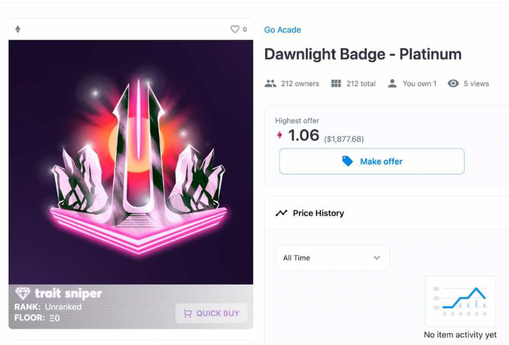
而當使用者看到高價 offer 的時候，通常會試著去接受這個 offer，但這個 NFT 的合約可能寫了一些程式碼來防止這個 NFT 被轉移（或是只有 contract owner 才能轉移 NFT），而當使用者嘗試接受 offer 時發出的交易就會失敗並 revert。這時使用者可能會在交易失敗的內容裡看到要他必須前往某個網站才能領取獎勵，這時他就可能會被騙到釣魚網站了。
當然最近更流行的是更直接的方式，就是在 NFT 的圖片上寫說恭喜你獲得了某些獎勵，請到某個網站去領取等等，不管怎樣目的都是騙使用者前往釣魚網站，並用複雜的簽名訊息來誘導使用者簽名。
另一種作法是透過在 Discord / Twitter
散佈假訊息來讓使用者連到釣魚網站，並且會用很相似的 domain name
來騙過使用者，例如曾經有用 looksrore 偽裝成
looksrare NFT marketplace 網站的案例：
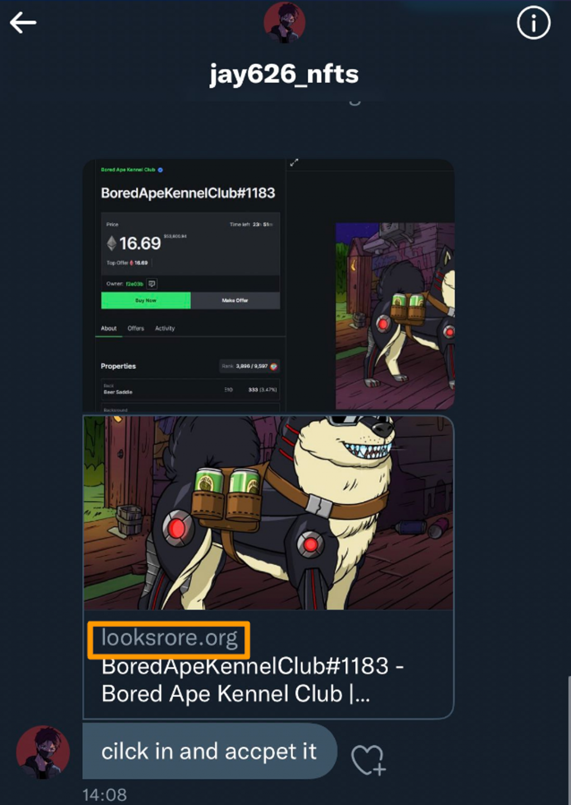
或是有一些釣魚網站他的 domain name 裡會有一些非英文字的特殊字元，例如說 o 上面多了兩個點，如果不仔細要看的話是看不出來的。
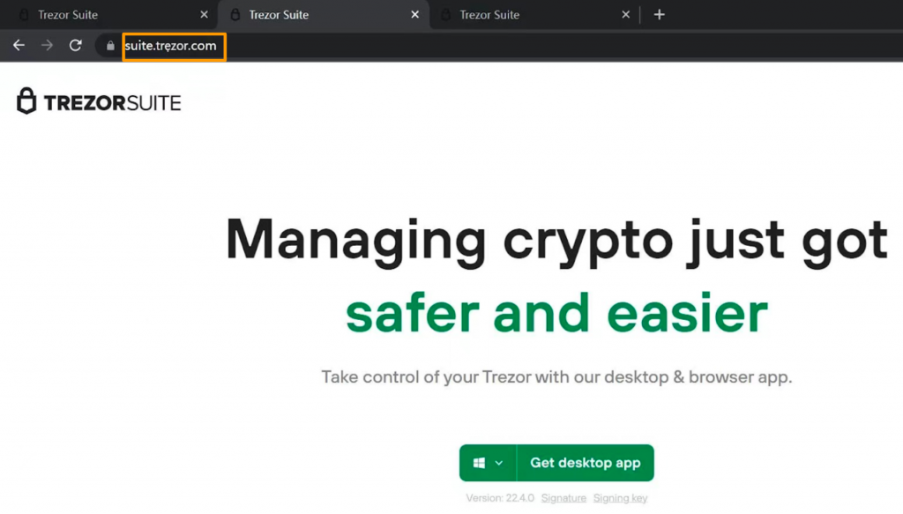
因此防禦方式很簡單，就是再三確認 domain name 跟是否正確即可，通常可以拿來跟其他管道獲得的 domain name 交叉比對去驗證（例如官方 Twitter、官網等等）。
最後還有一種比較少見的狀況，就是原本的網站被駭導致同一網址導向到駭客的網頁，這時會出現 https 憑證錯誤，代表駭客很可能正在進行中間人攻擊，去監聽流量並在網站內注入惡意的程式碼，導致跳出惡意的簽名內容。過去 MyEtherWallet 就曾經因為這個方式被駭，導致使用者 1700 萬美金的損失。
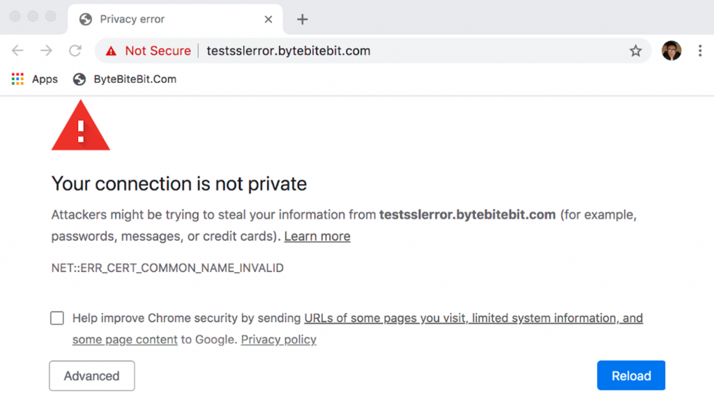
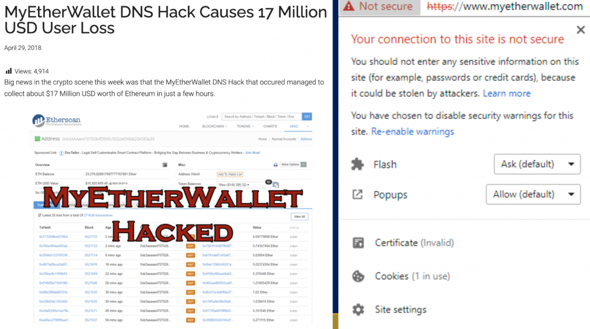
因此當瀏覽器提示有 https 相關錯誤時，不要繼續前往該網站是最好的防禦方式。
再來另一類型的操作問題是跟 DeFi 或惡意的智能合約有關，也就是當使用者跟這些惡意合約互動時也可能造成資產損失，而他通常會用很高的 APY 或是他的幣一直漲來吸引使用者投資進去。
例如之前有個著名的魷魚幣 rug 事件，他的幣一直漲吸引了許多人，但其實 contract owner 是可以 rug 流動性的，也就是可以一瞬間把這個流動池裡的錢全部抽走，如果沒有去仔細看這個智能合約的話，那就可能會被這種合約騙到。
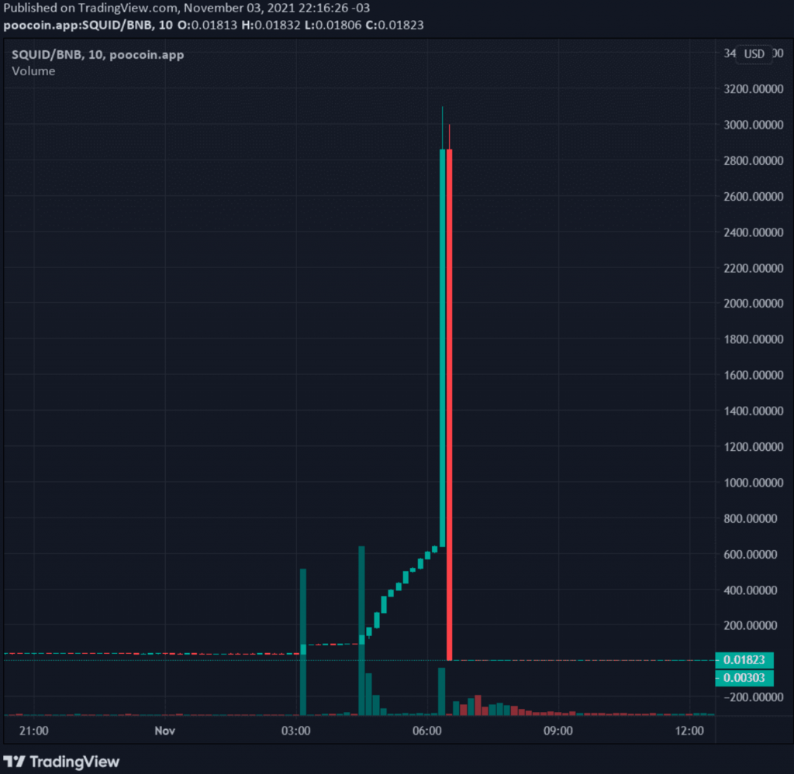
而且這種案例通常合約是不會開源的，代表沒辦法去驗證你存進去這個合約的錢到底是不是安全、在自己掌控範圍內的。因此沒開源的合約也通常代表著更高的風險。有些幣甚至會做成只能買不能賣的合約（也被稱為貔貅盤或殺豬盤），導致使用者以為自己賺很多但最後根本賣不掉。
第二種狀況是在 DeFi 協議中，如果 Admin 的權限過大也會有問題，例如如果合約的 Owner 有權力改變這個 DeFi 協議的關鍵參數，或是把資金緊急撤走，那也是個潛在的風險。因為我們不確定這個 Owner 地址背後的私鑰的控制者會不會突然發起這種交易，而這也失去「Decentralized Finance」的本意了，因為如果有一個人能夠控制整個協議的話，其實是非常中心化的行為。
因此比較嚴謹的 DeFi 協議可能會對關鍵參數的修改引入 Time Lock 的機制，也就是例如 Owner 想要改一個參數，那他可能必須要先提出更改提案（要發個交易上鏈），等待至少 48 小時後才能真正修改這個參數，這樣就會有一段時間讓大家評估、檢視這個決定，或是把資金給移走。讀者在研究 DeFi 合約機制時可以特別留意是否有這類的設計。
最後還有一種今年比較流行的方式：「0U 投毒」，例如當我從地址 A 把一些 USDT 轉給另一個地址 B，這時候駭客可能會觸發另外一筆 USDT 的轉移交易，轉 0 個 USDT 到另一個駭客控制的地址 C。比較特別的是這個地址 C 的前四位跟後四位跟用戶轉去的地址 B 是一樣的，這樣下次用戶如果只有核對轉帳地址的前四位跟後四位，有可能就不小心轉到了駭客的 USDT 地址。
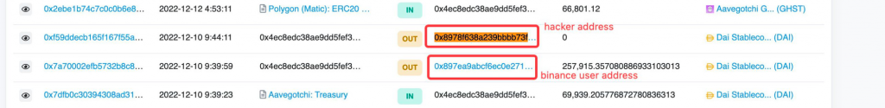
這個攻擊手法已經累計造成數百萬美金的損失。背後的原理是這些智能合約內的邏輯是允許我幫別人的地址轉出 0 USDT 的，畢竟不會有任何資產轉移（不確定是 bug 還是 feature？），而這樣的交易紀錄就容易讓不熟區塊鏈的使用者受騙。
對駭客來說可以預先產生好 16^8 約等於 42 億個地址，也就是對於所有前四位跟後四位的組合，都算出一個自己能掌握的地址，就可以在監聽鏈上活動發現有人轉移 USDT 時，馬上發起一個詐騙用的交易。
接下來講解關於錢包跟裝置的問題，也就是對應到昨天全景圖中的左半部分：
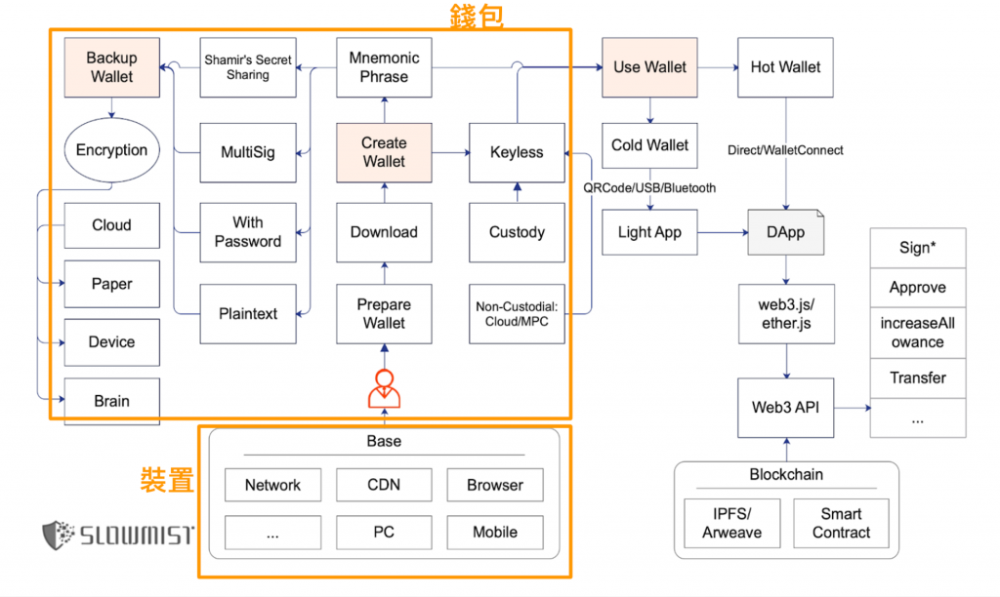
這裡的攻擊手法就會比較偏 Web2。例如最常見的就是駭客會想辦法讓你安裝惡意程式進電腦，像是透過各種盜版軟體、在 Google 下廣告等等方式，讓使用者裝進電腦。而這種惡意程式通常就會想辦法取得電腦上的機敏資料，例如去讀瀏覽器的 Cookie 甚至掃過電腦中所有資料夾來找有沒有檔案有存註記詞。
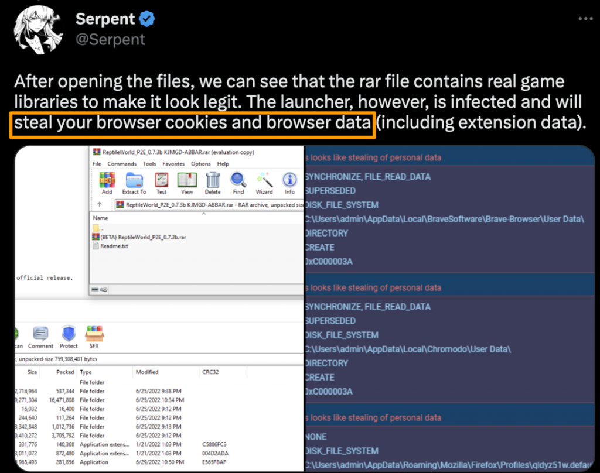
知名的 Twitter KOL “NFT God” 也曾經受騙上當，安裝了假的 OBS 直播軟體導致他的大量 NFT 被轉走。而這背後是駭客投放了 Google 廣告讓他的網站結果被顯示在最前面。
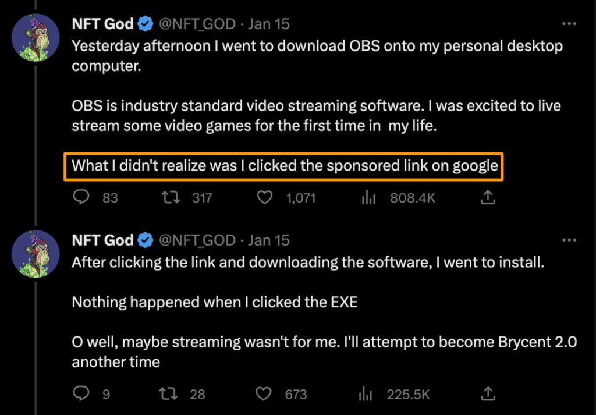
另外還有一種惡意軟體會做的事，就是「剪貼簿攻擊」，主要是透過監聽使用者的剪貼簿，來偵測是否有複製類似錢包私鑰或註記詞的字串。甚至會偵測使用者是否正在複製一個錢包地址，並在使用者想打幣給該地址時，偷偷置換成駭客自己的地址。
因此防禦方式是不下載任何可疑的 email 附件、檔案，或是在搜尋並安裝軟體時忽略 Google 廣告的內容、確認網址是否正確。以及在轉帳前還是必須再三確認即將送出的地址是否真的是想轉入的地址。
另外其實瀏覽器 Extension 的權限也很大，例如有些權限可以任意修改頁面中的內容，這也讓駭客有機會把交易所的入金地址置換成他自己控制的地址。因此在安裝瀏覽器 Extension 時也要特別注意他請求了哪些權限、是否請求比他需要的更多的權限。
在錢包軟體本身也有被攻擊的環節，例如知名錢包軟體 BitKeep 在去年就曾爆出因為 APK 被駭客修改，導致許多用戶的資產遭駭的事件（參考連結）。由於官方沒有公佈詳細的攻擊根本原因，只能猜測可能是駭客置換了官網的 APK 下載連結成包含惡意程式的版本，讓使用者開啟後偷讀取私鑰並上傳。
因此防禦方法就是都從官方的 Google Play / App Store 管道下載應用，而不裝從其他地方下載的 APK 檔，就能很大程度地避免這種攻擊，因為駭客要攻擊到換掉 App 開發商在 Google Play / App Store 的 App 是更困難的，而這個安全性來自於開發者上傳 App 到雙平台時都必須經過簽章的認證。
再來有一個比較針對性的攻擊方法，也就是去年有位使用者的 Metamask 錢包備份被釣魚後遭到破解。駭客首先打電話給他假裝自己是 Apple 客服，並要求他提供驗證碼，因此釣魚成功取得受害者在 iCloud 上的 Metamask 備份
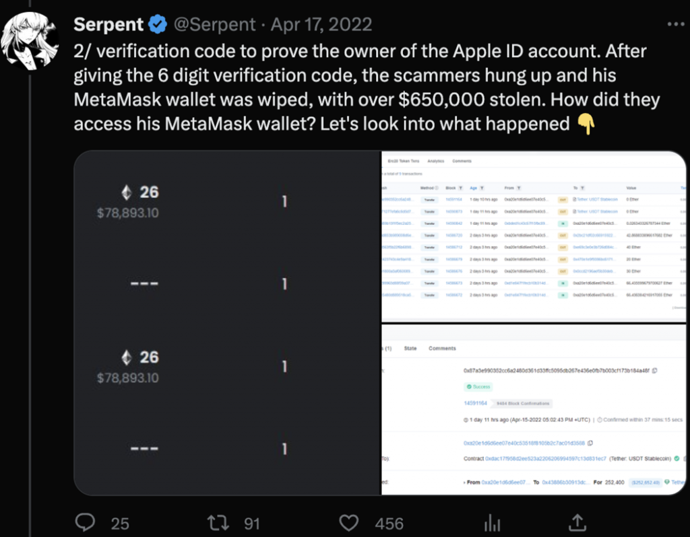
（參考連結）
理論上 Metamask 存在 Storage 中備份上 iCloud 的資料是經過我們設定的密碼加密產生，那為什麼還會被駭呢？很可能是駭客已經從其他渠道取得這個人常用的密碼組合（很多平台如果資安防護沒做好，駭客可能偷得到使用者的密碼），嘗試幾個後就成功把受害者的錢包私鑰解開了，這通常被稱為撞庫攻擊。因為以 Metamask 的加密強度，要在短時間內破解就算是超級電腦也很困難。
因此防禦方法就是不要提供任何驗證碼給別人，而有些人會選擇關閉 iCloud 備份來避免比較機密的資料被備份到雲端。不過在錢包中設定一個夠長且唯一的密碼更重要，因為越長的密碼可以讓破解難度成指數級增長。
關於密碼強度這篇文章有十分形象化的解釋，簡單來說越長或有越多特殊符號的密碼是越難破解的，也就是越右下方越安全：
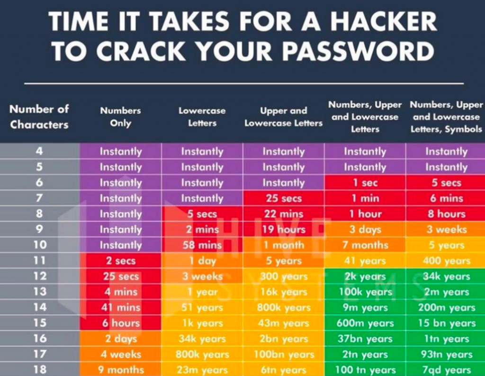
雖然密碼的破解難度還受到 hash 方式的強度影響今天不會深入講解，不過這張圖可以給讀者一個概念，評估自己的密碼強度多高。
關於操作安全、裝置安全與錢包安全等議題，以下整理一些常見的 FAQ：
Q: 如果我的錢包「連接」上了釣魚網站，會有被盜風險嗎？
A: 沒有簽名任何訊息或交易的話基本上沒風險
Q: 如果我的錢包被簽名惡意訊息/交易的方式騙走資產，就不能用了？
A: 就算取消授權了還是不建議繼續用，因為 Signature 在少數情況可能可以重復使用
Q: 我被盜的原因是註記詞被駭客猜到 / 暴力破解了？
A: 不可能（除非使用了有漏洞的 Profanity ，因為由他產生的註記詞可被破解）
Q: 註記詞洩漏後，還能嘗試轉 ETH 進去把其他 NFT 轉出來？
A: 可以嘗試但有可能會被瞬間轉走。理想做法是搭配 Flashbot 把多個交易綁在一起送出
Q: 熱錢包在電腦還是手機上比較安全？
A: 手機（iOS 再比 Android 安全），因為電腦的攻擊表面較大
除了前面提到的保護措施外，以下再介紹幾個方式。
為了避免私鑰/註記詞的明文在電腦上以任何形式暴露，許多人會推薦使用冷錢包，他的原理是讓私鑰只存在一個小型 USB 裝置中，當使用者要進行任何簽名時都必須將裝置連接到電腦，並在裝置上確認簽名。這樣就算不小心安裝了惡意軟體在電腦上，他也沒辦法讀到冷錢包的私鑰。
市面上有許多冷錢包廠商可選擇，如 Ledger, Trezor, SafePal, CoolWallet 等等，有興趣的讀者可以多研究他們之間的安全機制差異。但冷錢包並無法避免簽署到惡意的交易或訊息，在這種狀況的好處是可以幫助你在操作前三思，因為進行交易變得更麻煩了。
在惡意簽名的防範上也可以借助一些 Browser Extension 工具，來偵測當下簽名的東西是否有異常。較知名的選項有：
這幾個 Extension 都能在一筆交易或簽名前先模擬交易會產生的效果（如 Approve Token 或轉移 NFT），背後是透過交易在 EVM 中的 Simluation 來實際模擬交易會產生的 state change。更進階也有偵測現在連接的網站是否有可能是釣魚網站的功能。或是 KryptoGO Wallet Extension 也內建了交易安全相關的功能，有興趣的讀者可選擇適合自己的使用。
Web3 相關的資安議題其實水非常深，這兩天提到的主題都可以再深入講許多，不過掌握了幾個原則跟基本概念後，就能幫助我們在 Web 3 的世界中謹慎提防任何可能有風險的地方。而針對 Web3 資安想深入學習的讀者，可以從 Web3 Security Tools 這個 repo 去找相關資源，裡面整理了許多資安相關的工具。明天我們會探討熱錢包應該要如何安全備份的議題。